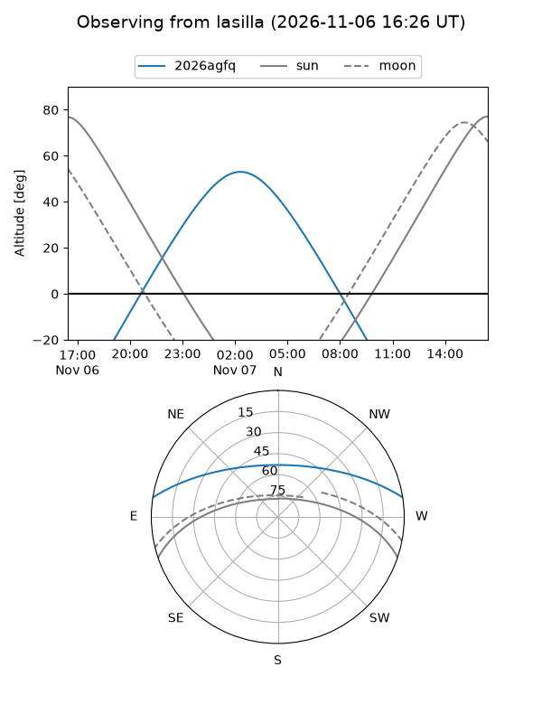
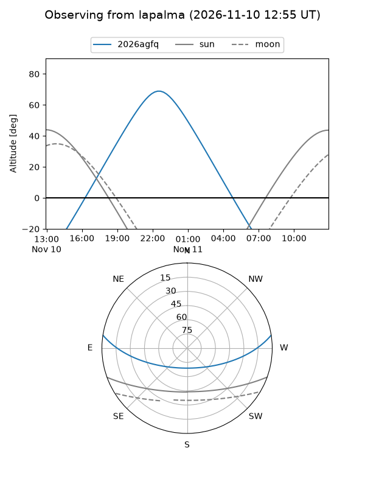
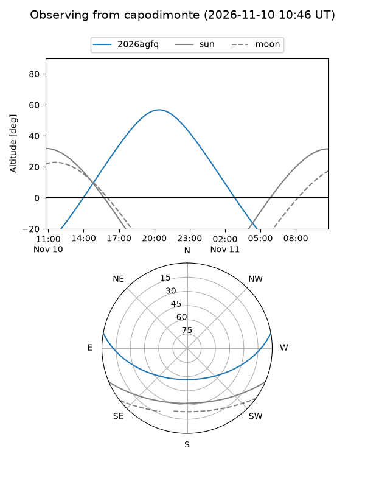
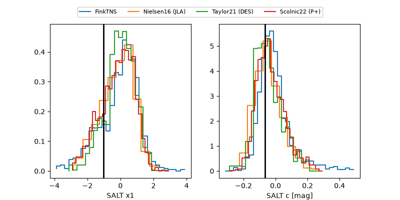

2026agfq
Target 2026agfq at 2026-11-06 20:29
Aliases and brokers:
FINK-ZTF: ztf.fink-portal.org/ZTF26acchdqu
Lasair-ZTF: lasair-ztf.lsst.ac.uk/objects/ZTF26acchdqu
ALeRCE-ZTF: alerce.online/object/ZTF26acchdqu
YSE-PZ: ziggy.ucolick.org/yse/transient_detail/2026agfq
TNS name: wis-tns.org/object/2026agfq
Direct TNS query: direct search
alt names
ZTF26acchdqu (ztf,fink_ztf)
2026agfq (tns,yse)
Coordinates:
equatorial (ra, dec) = 9.8829,+7.55433
equatorial (HMS+DMS) = 00:39:31.89,+07:33:15.58
galactic (l, b) = (117.7572,-55.19775)
Flags:
peak dt: +9.8
Photometry:
last ztfg=20.25, ztfr=19.87
3 ztfg, 3 ztfr detections
Lightcurve
Visibility



Additional plots
